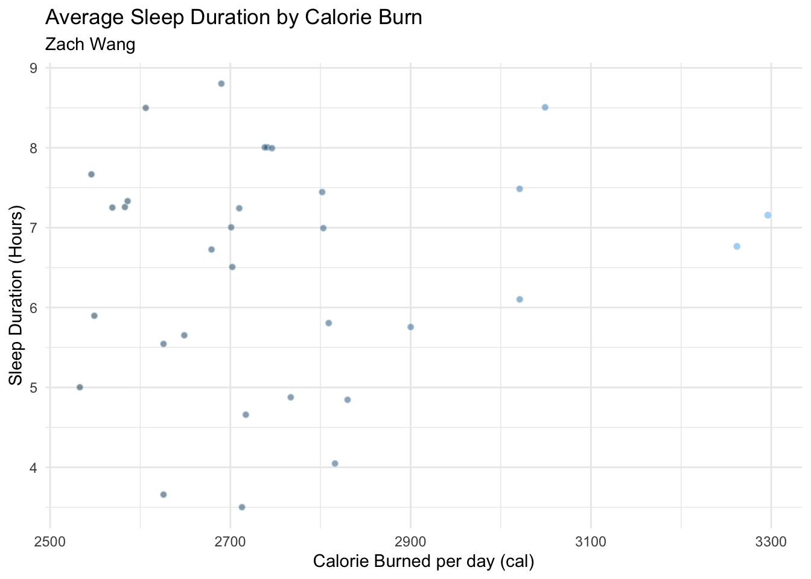

── Attaching core tidyverse packages ──────────────────────── tidyverse 2.0.0 ──
✔ dplyr 1.1.4 ✔ readr 2.1.5
✔ forcats 1.0.0 ✔ stringr 1.5.1
✔ ggplot2 3.5.1 ✔ tibble 3.2.1
✔ lubridate 1.9.4 ✔ tidyr 1.3.1
✔ purrr 1.0.4
── Conflicts ────────────────────────────────────────── tidyverse_conflicts() ──
✖ dplyr::filter() masks stats::filter()
✖ dplyr::lag() masks stats::lag()
ℹ Use the conflicted package (<http://conflicted.r-lib.org/>) to force all conflicts to become errors
library("here")
here() starts at /Users/zach/Desktop/git/ENVS-193DS_homework-03
library("flextable")
Attaching package: 'flextable'
The following object is masked from 'package:purrr':
compose
library("janitor")
Attaching package: 'janitor'
The following objects are masked from 'package:stats':
chisq.test, fisher.test
##Part 2 #a. I could calculate the mean sleep time for different calorie ranges to see if there’s a pattern in how sleep duration changes with daily energy expenditure. This comparison is informative because higher calorie burn might reflect more physical activity, which could influence sleep quality or duration.
#b
setwd("/Users/zach/Desktop/git/ENVS-193DS_homework-03/data")mydata <-read_csv("my_data.csv") |>#adding the dataclean_names()
Rows: 32 Columns: 8
── Column specification ────────────────────────────────────────────────────────
Delimiter: ","
chr (1): running
dbl (7): Date, Avgbreathrate, Avgheartrate, steps, sleeptime, Calories, HRV
ℹ Use `spec()` to retrieve the full column specification for this data.
ℹ Specify the column types or set `show_col_types = FALSE` to quiet this message.
# using scatter plot to visusalize the dataggplot(mydata, aes(x = calories, #add data framey = sleeptime,fill = calories)) +geom_jitter(width =0.2, #add plotsshape =21,alpha =0.5,color ="lightblue") +#change color of plotslabs(title ="Average Sleep Duration by Calorie Burn ", #add labelssubtitle ="Zach Wang",x ="Calorie Burned per day (cal)",y ="Sleep Duration (Hours)" ) +theme_minimal() +theme(legend.position ="none") #custom legends

#c This scatter plot displays the relationship between my daily calories burned and sleep duration (in hours). Each point represents a day of recorded data, represent variation in sleep relative to physical activity. While no clear linear trend is evident, most of the observation are located at the left side of the graph, which means most days the calories burned are no more than 2900 cal. All the observation are less than 9 hours. And the observations at the left hand side show a wide range of spreading means huge variance of sleep time.
##Problem 2 #a. I designed symbols for each different observation. The symbol looks like a triangle, the height of the triangle represent the sleep time. The width of the triangle represent the the calories I burned in the same day. On the top there is a bar, which means I did 5km running in that day. If there is no bar, then I did not do running that day. Now I can use the size and shape of triangle to fully communicate with others about my data.
#b.
Design of Affective Data
#c.
#d. My photo is showing every individual observations I recorded. Stefanie Posavec and Grogia Lupi’s Dear Data project inspired me to most via their icons. The form of my work is pencil drawing. At first, I was trying to present my data without the traditional axes since it looks boring and it takes time for people to gather the information for each observation. So I used shape of a triangle to represent the data of a single observation. Which means, now the information of a observation became more straight forward. If I want to add more information, I can also add color to the triangles to represent categorical data.
##Problem 3 #a. The t-test and Mann-Whitney test help the authors compare fish density, biomass, or size between protected and unprotected areas. And they are trying to figure out whether hydroacustics can reliably measure the differences compared to traditional visual survey.
Paper Figure
#b. The authors clearly represent their statistics in figure. The x axes logically show site names, and the y axes display fish density and biomass on logarithmic scales, which is appropriate for skewed ecological data. They show summary statistics which are means with error bars representing standard error, but they do not display the underlying raw data, which limits visibility into data distribution.
#c. The author handled visual clutter effectively in figure. They used distinct, vibrant colors for each site to differentiate groups without overloading the viewer, and grouped related comparisons for clarity. Both panels are clean and focused, with y axes labeled clearly, aiding interpretation across magnitudes. The data:ink ratio is high and nearly all graphical elements convey essential data, such as means with error bars and group lettering for significance, with minimal non informative decoration. This balance allows the viewer to quickly grasp differences in fish abundance across sites without spending more than 10 seconds.
#d. To improve Figure 3, I recommend including the sample size for each site below the bars, which would provide helpful context for interpreting the means and variability. Instead of bar charts alone, the figure could incorporate boxplots or raw data points to display the distribution and potential outliers, offering a clearer picture of variation. Increasing the font size and clarity of the yaxis labels would improve legibility, especially since the log scale can be challenging to interpret. Also, adding a concise caption or subtitle explaining the main result of the figure would make it more accessible and informative at a glance.